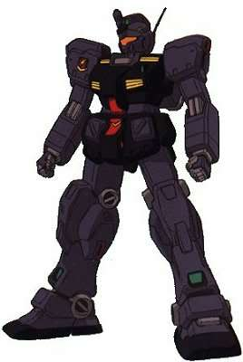
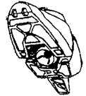
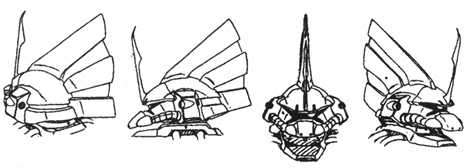
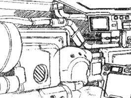
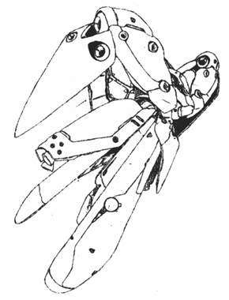
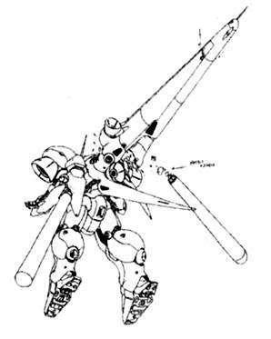

联邦篇：
RB-79C 改修型铁球
简介
本机是一年战争中大量生产的RB-79 铁球进行改修后，后期生产的机型，属于应急用的机型。一年战争结束之后只留了极少数用做据点防卫使用。迪拉兹之乱时，曾有部分隶属于地球轨道舰队的RB- 79C 改修型铁球担任太阳系统Ⅱ的护卫工作（这东西能起什么护卫作用？）。
概要
机体番号： RB-79C
机体代号(日文)： 改修型ボール 英文： Ball 中文： 改修型铁球
出现作品： 机动战士高达 0083 星尘的回忆
机体类型： 量产型机动舱（Moblie Pod）
制造商： 地球联邦军
所属： 联邦
初次配备： U.C.0079
技术参数
内部环境：
尺寸：
重量：
装甲材料及结构：
发电机出力：
推进力：
加速度：
装备及设计特征：
固定武装： 头部120mm低后座力加农炮；腕部格斗臂×2
选用武装：
选用手部武器：
远程武器：
RGM-79 大功率吉姆
机动战士高达0083机体介绍 RGM-79 大功率吉姆
简介
本机是联邦军基地里用来开发新型MS、为收集实验数据而改装配备的高出力实验机，因此本机没有独立的型式番号。大功率吉姆是一部以大型化发动机、脚部装备新型喷射器来提高吉姆的机动性/运动性为目的的重型MS，由迪克·阿利恩中尉担任测试员。但由于0083年爆发的“星尘事件”，本机的开发量产计划最终终止，相关资料也多散逸。
大功率吉姆装备上360mm超级火箭炮后就成了炮击型吉姆。此种新型的360mm火箭炮是以一年战争中RX -78-2 高达使用的火箭炮为蓝本而重新设计的，其射击精度/破坏力都有了大幅度的提高，是一项拥有非常高性能的兵器。正式采用时装备在了第二世代MS的先驱RX- 178 Gundam MkⅡ上。
概要
机体番号： RGM-79
机体代号(日文)： パワード·ジム 英文： Powered GM 中文： 大功率吉姆
出现作品： 机动战士高达 0083 星尘的回忆
机体类型： 实验运用试作型MS
制造商： 地球联邦军
所属： 联邦
初次配备：
技术参数
内部环境：
尺寸： 头顶高：18.0米
全高：18.5米
重量： 本体重量：46.6吨
全备重量：64.2吨
装甲材料及结构： 钛合金（钛/陶瓷复合材料）
发电机出力： 1650KW
推进力： 2×32000KG+4×1870KG=71480KG
加速度： 1.11G
装备及设计特征： 传感器探测有效半径：6000米
180°姿势变换所需时间：1.6秒
固定武装： 头部60mm火神炮×2；光束军刀×1，额定输出功率0.38MW
选用武装： 盾牌（RGM-79型用）
选用手部武器： 90mm机枪
远程武器：
RGM-79C 吉姆改
简介
本机是一年战争结束后，联邦军对“RGM-79 吉姆”进行改良后得到的诸多机体之一。大战结束之后，虽然签订了停战协定，但暗中潜伏的吉恩残党数量还是相当之多，然而此时整个世界的潮流已是缩减军费开支、恢复经济。面对这种情况，地球联邦军（特别是陆军）为了进行警戒及紧急事态处理工作，就必须建立高质量的MS部队，而旧型的RGM-79显然无法满足这种要求，这样，本机诞生了。
为了弥补发电机出力不足的毛病，本机采用了实弹系武器作为主武器，发动机几乎保持原样，只是助推器的总推力和机体的运动性能略有增加。“狙击型吉姆”和“改良型吉姆”等机型，虽属吉姆的改良、强化型，即所谓的高级机型，但“RGM-79C”终归属于批量机型，U.C.0083年，吉姆的批量生产线上生产的都是这种“C”型机。直到“RGM-79R 吉姆Ⅱ”登场之前，吉姆改作为联邦军的主力MS，一直在批量生产。
概要
机体番号： RGM-79C
机体代号(日文)： ジム改 英文： GM Kai 中文： 吉姆改
出现作品： 机动战士高达 0083 星尘的回忆
机体类型： 泛用量产型MS
制造商： 地球联邦军
所属： 联邦
初次配备：
技术参数
内部环境： 标准式驾驶舱
尺寸： 头顶高：18.0米
全高：18.5米
重量： 本体重量：41.2吨
全备重量：58.8吨
装甲材料及结构： 钛合金（钛/陶瓷复合材料）
发电机出力： 1250KW
推进力： 4×12500KG+4×1870KG=57480KG
加速度： 0.98G
装备及设计特征： 传感器探测有效半径：6300米
180°姿势变换所需时间：1.6秒
固定武装： 头部60mm火神炮×2；光束军刀×1，额定输出功率0.38MW
选用武装： RGM-79型用盾牌
选用手部武器： 90mm专用机枪；360mm超级火箭筒
远程武器：
RGM-79N 特装型吉姆
机动战士高达0083机体介绍 RGM-79N 特装型吉姆
简介
本机是一年战争结束后，地球联邦军以RGM-79C 吉姆改为原型机进行再设计所得到的机体，是专门为王牌驾驶员开发的性能增强型吉姆。一年战争结束后联邦军吸收了吉恩军的MS技术，着手开发各种新型MS。 “改良型吉姆”是其中的佼佼者，机体具有极高的的性能。本机并非象“狙击型吉姆”一样加强了装甲和火力，而是增强了机体的综合性能。例如，主推进器采用了与RX-78NT-1同型的推进器，机体各处也增设了姿势制御喷嘴，使本机获得了高水准的运动性能；可与高达型媲美的发动机输出功率，将携带式光束兵器变得更加易于使用。主武器本来预定使用光束兵器，但受到一年战争之后缩减军费开支的影响，因而改为实弹系兵器，但本机的整体性能仍然超过了RX-78-2 高达。
除去高达型之外，本机是0083年中联邦军机体性能水准最高的MS。另一方面，由于生产成本较高，作为批量机，它的总生产台数非常少，只配给了少数王牌使用，如《0083》中的伯宁上尉。
概要
机体番号： RGM-79N
机体代号(日文)： ジム·カスタム 英文： GM Custom 中文： 特装型吉姆
出现作品： 机动战士高达 0083 星尘的回忆
机体类型： 泛用量产型MS
制造商： 地球联邦军
所属： 联邦
初次配备： U.C.0083
技术参数
内部环境： 标准式驾驶舱
尺寸： 头顶高：18.0米
全高：19.0米
重量： 本体重量：42.0吨
全备重量：57.6吨
装甲材料及结构： 钛合金（钛/陶瓷复合材料）
发电机出力： 1420KW
推进力： 2×30000KG+4×1870KG=67480KG
加速度： 1.17G
装备及设计特征： 180°姿势变换所需时间：1.5秒
固定武装： 头部60mm火神炮×2；光束军刀×1，额定输出功率0.38MW
选用武装： 专用盾牌
选用手部武器： 90mm吉姆专用步枪
远程武器：
RGM-79Q 镇暴型吉姆
漫画和小说中的高达机体介绍 RGM-79Q 镇暴型吉姆
简介
本机是专门用作殖民卫星内部镇压武装叛乱及清扫吉恩残党用的机体，试作机测试结束后划归泰坦斯编制，因此本机是泰坦斯部队的专用机体。机体名称里的 “クゥエル”有着“镇压叛乱”的意思，因此通称本机为镇暴型吉姆。本机设计时以RGM-79N 特装型吉姆为原型机，推进器也是与RX-78 NT1同型的，除了推力有一点增大之外，性能差不多和RGM-79N一样（机动性、运动性、出力、火力等）。在GP系列的历史被抹消的U.C.0083年代，本机可以说是表面上最强的联邦军MS。其后泰坦斯的RX-178 高达MkⅡ也是以本机为基础来进行开发的。0083中原伯宁小队的贝特、亚德尔和蒙夏在加入泰坦斯时得到的机体就是本机，在以后清扫吉恩军残党时立下了诸多的战功。本机在格利普斯战争时全数丧失，没有一架残存的记录。
概要
机体番号： RGM-79Q
机体代号(日文)： ジム·クゥエル 英文： GM Quell 中文： 镇暴型吉姆
出现作品： 0083
机体类型： 泛用量产型MS
制造商： 地球联邦军
所属： 泰坦斯
初次配备： U.C.0083
技术参数
内部环境： 标准式驾驶舱
尺寸： 头顶高：18.0米
重量： 本体重量：39.9吨
全备重量：56.3吨
装甲材料及结构： 钛合金（钛/陶瓷复合材料）
发电机出力： 1420KW
推进力： 2×27000KG+4×1870KG+12000KG=73480KG
加速度： 1.31G
装备及设计特征： 180°姿势变换所需时间：1.5秒
固定武装： 头部60mm火神炮×2；光束军刀×1，额定输出功率0.38MW
选用武装： 专用光束步枪；专用盾牌
选用手部武器： 90mm吉姆专用步枪
远程武器：

GP00
简介
全称：RX-78 GP00"Blossom"
GP00是一部在01~04设计前的第一部GP系列机体。这机体设计时，概念是把GP系列的全部特点都加到一部机体上面。此机体同时要求陆地战及宇宙战能力，同时可以近距离格斗战以及强袭型一击脱离战法，又要可以装备重火力来防卫据点，又要装备I-Field来防御光束兵器，亦需要有核心战机作为驾驶员逃生以及带备比驾驶员更宝贵的机体资料回航。所以，如果此机体成功的话，01~04就不会被设计。但是，此机体在最初只装备大型光束步枪，综合型感应器及核心战机的情况下，就已经被破坏，证明了一部机体不可能同时有着那么多的能力。
此机体如何被破坏则是有数种说法：
在Phantom Bullet（最初出现此机体的外传故事）中如此说：和吉恩残党军作战时被破坏。
在电击Hobby杂志的“Gundam Secret Weapons”中如此说：撞到一艘破弃的舰只的残骸。
在Gundam Wars卡片游戏（第一次在官方承认的地方出现并有公式设定图片）如此说：因为太多的装备令机体失去平衡度，所以在测试时自毁。
没有任何证据证明任何一个说法是比另一个说法更正确，但其实这三个说法并没有互相抵触，所以混合起来的说法可能是：
在一次测试时，GP00遇到了吉恩残党军而被逼进入作战（就像GP03在Gundam Evolve第4集中那样）。在作战时，因为太多的装备令机体失去平衡度而失控。而在失控后，此机体撞进了一艘破弃舰只的残骸中被破坏。
总之，最重要的部份为它被破坏是因为不平衡的极多装备设计。这使得高达开发计划团队决定把各个特性分开到四部机体上面。而引伸出后来的01~04四部机体。此机体并未在0083中出现，本来出现于ファントムブレット（Phantom Bullet）而只有在Gundam Wars此游戏中算是官方承认的例子。
RX-78 GP01 玉帘
简介
一年战争结束后，地球联邦军的上层对MS这种兵器本身进行了研究。联邦军战后的MS开发基本上是从吸收了旧吉恩公国军的先进技术开始的。从接收过来的物资和设施等各方面情报分析出了技术上的差距后，提出了以使MS更加高性能化为目标的提案，这就是所谓的“高达开发计划”。
按计划以一年战争时拥有惊人战绩的RX-78-2 高达为基础，制造了若干实验用的高达型机体，为次期主力MS的开发进行测试。GP01便是这些试作机中被称为“泛用型”的以在重力下作战为前提的机体。本机与RX-78-2相比，大幅强化了探测器的使用，另外作为追求泛用人型兵器这一设计思想的结果，其运动方式更加接近于人。为确保驾驶员的安全和回收战斗数据，机体还采用了核心操作舱系统（Core Block System），新式的核心战斗机Ⅱ（Core Fighter Ⅱ）与本体的组装也由以前RX-78那种存在问题的垂直方式改为水平方式。新框架的设计和最先进技术的引入，使GP01拥有以前陆战用MS所没有的高机动性和运动性，成为当时性能最高的机体。
GP01作为一台拥有高泛用性的机体，除了光学武器外，还可以装备并使用各式各样的实弹武器。其中之一便是联邦军MS的标准武器90mm机枪（machine gun）。虽然不论是破坏力还是贯穿能力光学武器都更胜一筹，但想要进行面而不是点攻击时，还是实弹式的机枪更好一些。另外，在进行模拟战等实地训练时使用彩弹这样的特殊弹药也可以使战斗变得更加安全。
U.C.0083年10月，吉恩军残党从特林顿（Torinton）基地强夺 GP02A时，被紧急编入追击部队的GP01没有时间准备专用的光束步枪（beam rifle），于是就在装备了90mm机枪的状态下进行追击。后来，浦木宏（Kou Uraki）少尉驾驶的GP01面对装备有大气圈脱出用推进器的科姆塞（CoMusai，姆塞级巡洋舰的前半部分）时，在其航路上正面攻击，漂亮地将正要起飞的科姆塞击落。
被称为高达的MS有一个共同的特点，那就是白兵战的能力很强。在米诺夫斯基（Minovsky）粒子散布下的战场上，如果靠狙击战得不到想要的战果，就必须依赖机体的白兵战能力。拥有接近人的运动性的GP01，凭着丰富的机体运动方式获得了极高的白兵战能力。这一点可以从测试机师浦木宏（Kou Uraki）少尉在高达试作2号机追击战中与被称为“所罗门的噩梦”的吉恩军王牌机师阿纳贝尔·卡托（Anavel Gato）少校的战斗中看出来。当时还是新手的浦木借助机体性能上的优势能与强敌卡托的GP02A打得不分胜负，足以显出GP01惊人的白兵战能力。
U.C.0083年10月13日，地球联邦军澳大利亚地区特林顿基地，最新型强袭登陆舰阿尔比昂（Albion）号载着两台试作型高达入港。同一天晚上，核弹头装填完毕的高达试作2号机被被称为“迪拉兹舰队（Delaz Fleet）”的吉恩军残党成功强夺，基地也因为导弹群的攻击而陷入毁灭状态。这时，挡在准备撤退的GP02A面前的就是驾驶着GP01的测试机师浦木宏少尉。他驾驶着装备不全的GP01一直追击并三度与卡托少校的GP02A交手。没什么实战经验的他凭借优秀的机体性能成功地越过了死亡线。
这之后，在非洲的金巴莱多矿山基地，与公国军残党诺渊·比达少将指挥的陆战部队交手时，逐渐成熟的他驾驶着GP01，以强力的光束步枪的攻击成功地将敌部队击破，解救了小队的危机。最后，执著地要将阿尔比昂击沉的比达少将驾驶的ZAKUⅡ在与阿尔比昂舰桥接触的瞬间，被GP01以精确的射击击毁，再一次证明了GP01优异的性能。
GP系列的各机的正式名称皆引用花名来命名，取其花语象征。GP-01的名字为“Zephyranthes 玉帘”，花语是“纯洁的爱”。
概要
机体番号： RX-78 GP01
机体代号(日文)： ゼフィランサス 英文： Zephyranthes 中文： 玉帘
出现作品： 机动战士高达 0083 星尘的回忆
机体类型： 泛用试作型MS
制造商： 阿纳海姆电子公司
所属： 联邦
初次配备： U.C.0083.10.13
技术参数
内部环境： 1名驾驶员，GP01高达使用标准配置座舱结合尚未完美的核心调节器系统所制造出来的“FF-XⅡ核心战斗机Ⅱ”作为机体的驾驶舱兼脱出装置
尺寸： 头顶高：18.0米
全高：18.5米
重量： 本体重量：39.7吨
全备重量：65.0吨
装甲材料及结构： 月神钛合金（Lunar Titanium）半固定框架结构（semi-monocoque frame）
发电机出力： 1790KW
推进力： 2×42000KG+2×12000KG=108000KG
加速度： 1.66G
装备及设计特征： 180°姿势变换所需时间：0.9秒
固定武装： 60mm火神炮×2，弹链供弹，安装在头部两侧；光束军刀×2，收藏在背部充电座上，手持使用
选用武装：
选用手部武器： XBR-BOWA M-82A光束步枪，额定输出功率1.5MW，能量由可更换式“e-pac”弹匣供应，两个备用“e-pac”弹匣收藏在盾里；90mm机枪，弹夹供弹，20发/夹；专用伸缩盾
远程武器：
RX-78 GP01Fb 全方位推进型玉帘
简介
本机是RX-78GP01 Zephyranthes的空间战装备机。技术人员在GP01的基础上加装了全方位推进器，强化了机体的宇宙战性能，推进力也得到大幅提升，第一世代的 MS自不待言，即使与第二世代的名机RMS-099 利克·迪亚斯相比也毫不逊色。由于GP系列的资料在“迪拉兹之乱”后均被联邦军抹消，所以关于本机的详细资料十分之少。本机所采用的可变式推进器等许多技术，成为利克·迪亚斯等第二世代机体的基础。
概要
机体番号： RX-78 GP01Fb
机体代号(日文)： フルバーニアン 英文： Full Vernian "Zephyranthes" 中文： 全方位推进型玉帘
出现作品： 机动战士高达 0083 星尘的回忆
机体类型： 宇宙战用试作型MS
制造商： 阿纳海姆电子公司
所属： 联邦
初次配备： U.C.0083.11.4
技术参数
内部环境： 1名驾驶员，GP01高达使用标准配置座舱结合尚未完美的核心调节器系统所制造出来的“FF-XⅡ核心战斗机Ⅱ”作为机体的驾驶舱兼脱出装置
尺寸： 头顶高：18.5米
全高：19.5米
重量： 本体重量：43.2吨
全备重量：74.0吨
装甲材料及结构： 月神钛合金（Lunar Titanium）半固定框架结构（semi-monocoque frame）
发电机出力： 2045KW
推进力： 4×45000KG+4×13500KG=234000KG
加速度： 3.16G
装备及设计特征： 180°姿势变换所需时间：0.8秒
固定武装： 60mm火神炮×2，弹链供弹，安装在头部两侧；光束军刀×2，收藏在背部充电座上，手持使用
选用武装：
选用手部武器： XBR-BOWA M-82A型光束步枪，额定输出功率1.5MW，能量由可更换式“e-pac”弹匣供应，两个备用“e-pac”弹匣收藏在盾里；XBR-L83D型光束步枪；专用盾牌
远程武器：
RX-78 GP02A 酸浆果
简介
U.C.0081年10月13日，联邦议会通过了联邦军再建计划。一周后，由约翰·考文中将负责的“高达开发计划”开始实施。试作机的开发工作由战后吞并了旧吉恩吉恩尼克公司、使MS开发部门急速成长的统合企业——阿纳海姆公司为中心进行。开发过程中有4个种类MS的开发预案。本机体——GP02A—— 为试作机第2号方案、以旧吉恩军的重型MS为设计思想，做为重装甲/重武装的强袭攻击型机动战士制造的。但是，对MS之间格斗战的实效性怀有疑虑的联邦军首脑部，要求这部机体使用更高的重型武装。最后，结论是决定使用在南极条约中被禁止的“核”武器。为了迎合使用核武器这一要求，使得GP02A在设计阶段就进行了大幅的改造，主要表现在原来装备主推进器的背面设置了核弹头储藏库，两肩装备了配置有3台大型推进器的可动式部件“FTB”，这使得其的外型特异之极。FTB这个部件，成功地给予了重量级MS——GP02A完美的高机动性、能不以机体重心为作用点而转身的高回旋性能。这部GP02A，是RX系列中极为稀少的、同时持有重装甲/高机动性的高性能实验机，阿纳海姆公司的员工给它取了个非正式的名称——“Physalis”，这是观叶植物“酸浆果”的学名，花语的意思为——“虚伪”。
“所罗门的噩梦”阿纳贝尔·卡托少校。一年战争中，在激战不断的所罗门宙域，他犹如鬼神一般的战斗方式，使无数联邦军士兵陷入了无尽的恐惧之中，他的勇名甚至被记载在了联邦军士官学院的现代战史课本内。战后，盛传卡托已在U.C.0079年12月31日的“阿·巴瓦·库”战役中战死，但是实际上他是在保护公国军格瓦金级战舰时，被舰长艾基尔·迪拉兹少将说服，决定脱离战场、跟随迪拉兹在大战终结后与吉恩军残党结成“迪拉兹舰队”，培养战力、伺机向联邦政府反击。
U.C.0083年，联邦军极密的“高达开发计划”被残党军知晓，并且从中了解到了联邦军有搭载核弹头的高达存在，遂制定“星尘作战”，任命卡托少校为第1、第2阶段计划负责人、并于同年10月9日突入大气圈。同月13日， “星尘作战”第1阶段实施，卡托成功潜入联邦军基地、夺取了核弹头装填完毕的GP02A。在这次作战中，他打开通讯回路，对追击的联邦军士兵报出自己阿纳贝尔·卡托的名字，而联邦军士兵立即恐于其“所罗门的噩梦”名号而不敢前进。这个瞬间，就是他重返战争舞台的开始。
RX-78 GP02A高达试作2号机作为战术核装备机体而进行再设计后，使得其泛用性极端下降。其标准装备，除去特殊装备核弹火箭筒之外，就只剩下头部火神炮2门，及光束军刀2把了。但是，在拥有丰富作战经验、对MS极具操纵感的阿那贝尔·卡托少校的操纵下，GP02A发挥出了超乎一般、压倒性的战斗能力。2号机被强夺以后，他用这部机体一次次更新了自己的击坠记录。本机体最后一次战斗、与GP01Fb高达试作1号机的单挑中，在左臂失去作用的情况下，卡托解除了光束刀的限制装置，以接近平常2倍的光束刃向对方做出包含他无比执念的最后一击。最终，GP02A与GP01Fb同归于尽。
本机体 GP02A所携带的核弹头“Mk.82”，在议会的预算书上以“战术核”被记载，它的威力与“战略核”不能同日而语。但是其攻击力比携带性优先考虑，这使得弹头到达距离短于波及范围半径，这就要求GP02A能承受在极近距离内发生的核爆炸，所以对机体进行了彻底的耐热/耐冲击处理。而且，GP02A的驾驶舱采用了球型构造，细小的部件也做了极端的简化。此外收纳核弹火箭筒炮身的大型盾牌内还集成了大型冷却装置，它可以在高热中，由经4个制冷剂喷出口，喷出储藏的冷却剂，在机体周围形成一层保护膜，减少机体所受的热辐射。
U.C.0083年11月10日，“星尘作战”第2阶段实施，卡托乘坐GP02A，率领MS部队出击，前往被联邦军称为“金米岛”、而旧吉恩军称做“所罗门海域”的宙域。这一日，是联邦军宇宙舰队的观舰仪式，联邦军宇宙舰队大半的战力都在此集结。卡托击溃了迎击部队，由港湾入侵，喊着“所罗门啊！我回来了！！”这句慷慨激昂的台词，在密集的联邦军战舰的头顶上施以了核打击。这一击，毁灭了联邦军宇宙舰队的2/3战力，“所罗门的噩梦”这一威名再一次在所罗门上方飘然回荡。
概要
机体番号： RX-78 GP02A
机体代号(日文)： サイサリス 英文： Physalis 中文： 酸浆果
出现作品： 机动战士高达 0083 星尘的回忆
机体类型： 特殊攻击用试作型MS
制造商： 阿纳海姆电子公司
所属： 联邦
初次配备： U.C.0083.10.13
技术参数
内部环境： 标准式驾驶舱
尺寸： 头顶高：18.5米
全高：19.5米
重量： 本体重量：54.5吨
全备重量：83.0吨
装甲材料及结构： 月神钛合金（Lunar Titanium）半固定框架结构（semi-monocoque frame）
发电机出力： 1860KW
推进力： 4×32000KG+4×6800KG=155200KG
加速度： 1.87G
装备及设计特征： RX-78 GP02A高达试作2号机作为战术核装备机体而进行再设计后，使得其泛用性极端下降
180°姿势变换所需时间：1.1秒
固定武装： 核弹火箭筒1门所带核弹头“Mk.82”；头部60mm火神炮×2；光束军刀×2，收藏在腰部
选用武装： 收纳核弹专用大型盾牌
选用手部武器：
远程武器：
RX-78 GP03D 石斛兰
简介
U.C.0081年10月13日，鉴于吉恩残党的暴乱活动始终不断，为预防战乱再次到来，联邦议会表决通过了联邦军重建计划。20日，作为重建计划的一环，在约翰·考文中将的主持下，由当时最大的兵工企业阿纳海姆电子技术公司展开研制尖端技术机动战士的“高达开发计划”。本机即是阿纳海姆公司参考自旧吉恩军所开发的MA级的强大火力、高机动力，及兼备MS的泛用性的特点而开发的超级兵器，也是“高达开发计划”中的三号机，其主要用途为宇宙空间据点防御。
RX-78GP-03S Stamen与武器库系统（Orchis）合体后便成为本机。从严格意义上来讲，很难将本机归入MS或MA中的任何一类。技术人员在机体各部总共设置了6 个大型推进器，使机体的总推力达到2265000KG，仅靠速度便能轻易地突破敌军的防线，然后利用高火力将敌人击溃。机体右侧搭载的长达70米的大型光束炮威力凌驾于战舰主炮之上；所配备的大型光束军刀可轻易斩断战舰的厚重装甲；本机还搭载了I Field 发生器，使用时能使光束武器无效化，大大提高了机体的防御力。对于普通的MS而言，本机可称得上是怪物般的存在。
“迪拉兹之乱”后，有关本机的一切资料均被销毁，但本机的设计概念对以后的MS开发，特别是Z计划，有着非常深远的影响。
GP系列的各机的正式名称皆引用花名来命名，取其花语象征。GP-03D的名字为“Dendrobium 石斛兰”，花语是“任性的美女”；武器库“Orchis”意思则是“花瓣”。
概要
机体番号： RX-78 GP03D
机体代号(日文)： デンドロビウム 英文： Dendrobium 中文： 石斛兰
出现作品： 机动战士高达 0083 星尘的回忆
机体类型： 宇宙战用试作型机动兵器
制造商： 阿纳海姆
所属： 联邦
初次配备： U.C.0083.11.11
技术参数
内部环境： 核心操作部分由RX-78GP-03S Stamen来完成
尺寸： 携带光束炮状态下全长140.0米；非携带状态下全长73.0米
全高：38.5米
全宽：62.0米
重量： 本体重量：226.4吨
全备重量：453.1吨
装甲材料及结构： 高达尼姆合金半固定框架
发电机出力： 38900KW
推进力： 377500KG×6=2265000KG
加速度： 5.00G
装备及设计特征： I Field发生器
固定武装： 大型光束军刀×2；MEGA光束加农炮；武器荚舱
选用武装： 3连装大型导弹荚舱；108连装微型导弹荚舱；爆导索；XBR-BOWA M-82A型光束步枪；折叠式火箭炮
选用手部武器：
远程武器：
RX-78 GP03S 雄蕊
简介
RX-78GP-03S Stamen是作为RX-78 GP-03D的核心系统而开发的GP系列中最特异的MS。虽然名为核心系统，但本机的单机性能相当出色，远超当时的量产型MS。技术人员在机体的各个部位安装了许多姿势制御用火箭，这在当时是非常少见的；所使用的光束军刀等外装式装备以被称为“同形”的方式收纳于机体内部；此外，本机所采用的电脑系统也远高于当时普通MS所采用的电脑系统的水准。由此可见，本机在设计上具有惊人的先见性和超前意识。本机于“迪拉兹之乱”时投入实战，其出众的能力为众多目击其参战的联邦军机师所证实。“迪拉兹之乱”后，有关本机全部的资料均被联邦军抹消。“Stamen”这个名字的意思是“雄蕊”，与武器库系统（Orchis）合体后便成为RX-78 GP-03D 石斛兰（Dendrobium）。
概要
机体番号： RX-78 GP03S
机体代号(日文)： ステイメン 英文： Stamen 中文： 雄蕊
出现作品： 机动战士高达 0083 星尘的回忆
机体类型： 宇宙战用试作型MS
制造商： 阿纳海姆
所属： 联邦
初次配备： U.C.0083.11.11
技术参数
内部环境： 标准式全视野监控
尺寸： 头顶高：18.0米
全高：18.2米
重量： 本体重量：41.6吨
全备重量：70.0吨
装甲材料及结构： 高达尼姆合金半固定框架
发电机出力： 2000KW
推进力： 42000KG×2+12000KG×2+40000KG×2=188000KG
加速度： 2.69G
装备及设计特征： 180°姿势变换所需时间：0.8秒
固定武装： 光束军刀×2
选用武装： 折叠式盾牌
选用手部武器： XBR-BOWA M-82A型光束步枪，额定输出功率1.5MW；折叠式火箭炮
远程武器：

吉翁篇：
MS-06F2 扎古Ⅱ 后期型
简介
一年战争开战初期，作为吉恩军主力量产、投入战斗的杰作机MS-06F，在大战中，接受了各种各样专用机的改装。到了大战末期，由于时常进行扎古Ⅱ本体的改良，所以这时的机体性能与开战初期的机体性能有着相当大的差距。这种被称为F2型的机体，就是大战末期修改型的一种。与原型的F型扎古相比较而言， F2型的机体做了轻量化处理，且增设了推进器及姿势制御火箭。这样，虽然是量产型机体，但本机得到了相当高的评价。但是，其量产体制确立之时，正值大战终结之时，只有少量的机体投入了实战，其余大部分机体都被联邦军所接收，是一充满悲运的机型。
大战末期量产的MS-06F2，虽然终战后大多都被联邦军所接收，但是其中有一部分机体，却在吉恩支持者的帮助下，趁终战时的混乱局面，偷偷转交给了吉恩军残党。这部机体就是其中之一，它被修改成了陆战用，配备给了非洲残存部队。还存在有追加了头部薄弱处装甲、紧急对处用增强装甲版的机型。（图5—8）
量产型机体稀少、资源贫乏的吉恩军残党部队，在进行机体修补作业时，经常发生部品不足的事态。为此，他们采用了将无法运行、或者在战场上被破坏机体的完好部件拆下，再进行调整、补充的方法。这部机体，就是利用两台不同扎古的上、下半身组装而成，但由于无暇顾及涂装色的问题，所以使得其上、下半身的颜色无法统一，这也从一个侧面反映了继续拼死抵抗的残党军所面临的严酷状况。但是，这种用散件拼凑出来的机体，其武装方面却远远高于其他机体，是残党军的贵重战力。（图9—10）
一年战争终战协定缔结后，MS-06F2大多被解除武装，由联邦军接收，作为训练机使用。但是之后，联邦军又对此类机型进行了再考察。考察结果，便是次世代MS——RMS-106 高扎古的诞生。（图11）
一年战争时，吉恩公国军非洲方面军团指挥官、被阿纳贝尔·卡托赞为“武人之镜”的比达少将，是一位在部下中拥有深厚人望、非常有能力的指挥官。一年战争终战协定缔结后，他与很多期望着东山再起的士兵们一起、在被联邦军所废弃的东非洲钻石矿山开采场的地下基地经过了3年严酷的雌伏期。这部作为比达少将专用机的MS-06F2，背部追加了增速用喷射器，能使机体急速上升。（图12—13）
概要
机体番号： MS-06F2
机体代号(日文)： ザクⅡ（後期生産型） 英文： Zaku Ⅱ Type F2 中文： 扎古Ⅱ 后期型
出现作品： 机动战士高达 0083 星尘的回忆
机体类型： 泛用量产型MS
制造商： 吉恩公国军
所属： 吉恩
初次配备： U.C.0079
技术参数
内部环境： 标准式驾驶舱
尺寸： 头顶高：17.5米
重量： 本体重量：49.9吨
全备重量：70.3吨
装甲材料及结构： 超高张力钢（超硬钢合金）
发电机出力： 986KW
推进力： 2×20500KG+4×3100KG=53400KG
加速度： 0.76G
装备及设计特征： 传感器探测有效半径：3200米
180°姿势变换所需时间：1.7秒
固定武装：
选用武装： 腿部3连装导弹荚舱×2
选用手部武器： MMP-80型90mm专用机枪；MMP-78型120mm扎古机枪；280mm扎古火箭炮；热能斧；穿甲弹
远程武器：


MS-09F/TROP 热带型大魔
简介
MS-09F/TROP 热带型大魔是以MS-09F为基础进行了防尘处理而得到的机体，主要适用于沙漠战，是特地为非洲战线部队开发的局地战用机体。机体名里的“TROPEN” 是德语“tropical”，也就是“热带”的意思。设计人员在机体脚部的进气口及推进器上安装了大型的灰尘过滤器，各关节也进行了防尘化处理；为了达到整备过程简单化的目的，设计人员还将装甲形状做了修改，使装甲更加紧凑。由于装备的互换性问题得到改善，因此可以不经调整直接使用扎古等的武器。虽然在一年战争中参战的数量不多，但在战后有相当数量的本型机以游击战的方式活跃在中非一带。
由于本机拥有丰富的武器装备及高度的泛用性，所以能对应各式各样的任务。标准装备中的巨型火箭筒，其破坏力绝对值得信任，但是反过来，其形状过于长大，携带不便，存在装备时由于重量增加而使机动性低下的问题。所以干脆舍弃不用，采用了装备MMP-80型90mm机枪及手提即弃榴弹炮的大胆方案。这种手提即弃榴弹炮是专门以对MS攻击而开发出来的简易兵器，虽然其射击精度不及其他武器，但是其作为轻量、便宜、用后即弃的兵器，在使用后能有效的降低机体重量。榴弹炮的弹头远比火箭炮的弹头来得大，中弹时的破坏力与爆炸产生的范围广大的冲击波堪称最大级数。在突入敌阵时，先使用榴弹炮进行牵制攻击，趁敌部队产生混乱之际，以气垫装置进行高速移动，然后使用持有接近战能力的MMP-80型90mm机枪进行压制。当然，这种以遭受敌部队反击为前提的战术，只能由覆有重装甲、耐久性高的大魔执行。
概要
机体番号： MS-09F/TROP
机体代号(日文)： ドム·トローペン 英文： Dom Tropen 中文： 热带型大魔
出现作品： 机动战士高达 0083 星尘的回忆
机体类型： 局地战用量产型MS
制造商： 兹玛德公司
所属： 吉恩
初次配备： U.C.0079
技术参数
内部环境： 标准式驾驶舱
尺寸： 头顶高：18.5米
重量： 本体重量：44.8吨
全备重量：79.0吨
装甲材料及结构： 超高张力钢（超硬钢合金）
发电机出力： 1199KW
推进力： 2×22000KG+2×7300KG=58600KG
加速度： 0.74G
地上速度：360千米/时
装备及设计特征： 传感器探测有效半径：6300米
180°姿势变换所需时间：2.1秒
固定武装： 胸部扩散光束炮
选用武装：
选用手部武器： 热能军刀；880mm榴弹炮，弹匣供弹，每匣5发，备用弹匣可以挂在腰部装甲的支架上；MMP-80型90mm机枪，弹匣供弹，每匣32发，备用弹匣可以挂在腰部装甲的支架上，机关枪可以挂在后部裙甲的支架上；280mm扎古火箭炮，弹药筒供弹，4发每筒；穿甲火箭弹，可以挂在裙甲的支架上
远程武器：

MS-09RⅡ 加大魔Ⅱ
机动战士高达0083机体介绍 MS-09RⅡ 加大魔Ⅱ
简介
统合整备计划实施后，技术人员对MS-09R进行了再次调整，设计出完全的空间战用机体——MS-09RⅡ 加大魔Ⅱ，但参战数量不多。三年之后的迪拉兹之乱中，仍有MS-09RⅡ活跃的身影。
概要
机体番号： MS-09RⅡ
机体代号(日文)： リック·ドムⅡ 英文： Rick Dom Ⅱ 中文： 加大魔Ⅱ
出现作品： 机动战士高达 0083 星尘的回忆
机体类型： 宇宙战用量产型MS
制造商： 兹玛德公司
所属： 吉恩
初次配备： U.C.0079
技术参数
内部环境： 标准式驾驶舱
尺寸： 头顶高：18.6米
全高：18.6米
重量： 本体重量：45.6吨
全备重量：79.9吨
装甲材料及结构： 超高张力钢（超硬钢合金）
发电机出力： 1219KW
推进力： 2×21000KG+2×7000KG=56000KG
加速度： 0.70G
装备及设计特征： 传感器探测有效半径：5400米
180°姿势变换所需时间：2.1秒
固定武装： 胸部扩散光束炮
选用武装：
选用手部武器： 360mm火箭炮；热能军刀；MMP-80型90mm机枪；880mm榴弹炮；穿甲火箭弹
远程武器：
MS-14F 海军陆战队用勇士
简介
在一年战争时期，吉恩公国军有一支以敌领域上陆作战为主任务的部队，即俗称为“海军陆战队”的两用作战部队（海军上陆战斗部队：Marine Amphibious Unit）。这支部队在一年战争末期所使用的机体，便是MS-14F 海军陆战队用勇士。
本机是吉恩军最终定型的量产机MS-14 勇士的海军陆战队用机型，而且按照海军陆战队的作战要求，进行了调整，强化了助推器的推力，同时增设了推进剂舱。从设计上讲是位于MS-14B和MS-14JG之间的机型。武器方面，在双腕部装备了110mm速射炮；另外，为了降低成本，还将扎古肩部的盾改装成了手持盾；连光束步枪也舍去，改成了90mm机枪。由于F型比MS-14JG的成本低廉很多，故量产数量相当多，被评价为杰作机，也是希玛舰队（即上述的海军陆战队）的主力机体。
由于本机性能相当优秀，所以在战后成为了联邦军的重点研究对象，而且为此接收了为数不少的机体供研究、分析所用。这些接收机被研究完后，就配备给了各军事设施做为训练机或者据点防御战力使用。U.C.0083年，由吉恩军残党发动的“星尘作战”终结后，原本驾驶GM加农Ⅱ型的恰克·吉斯少尉在北美奥克兰基地与浦木宏少尉再次相逢时，驾驶的就是被接收的海军陆战队用勇士，而且还用它做了两个很有意思的手势。
概要
机体番号： MS-14F
机体代号(日文)： ゲルググ·マリーネ 英文： Gelgoog Marine 中文： 海军陆战队用勇士
出现作品： 机动战士高达 0083 星尘的回忆
机体类型： 宇宙战用量产型MS
制造商： 吉恩公国军
所属： 吉恩
初次配备： U.C.0079
技术参数
内部环境： 标准式驾驶舱
尺寸： 头顶高：19.2米
全高：19.2米
重量： 本体重量：45.1吨
全备重量：81.3吨
装甲材料及结构： 超高张力钢（超硬钢合金）
发电机出力： 1440KW
推进力： 2×20500KG+2×7000KG=55000KG
加速度： 0.68G
装备及设计特征： 传感器探测有效半径：6300米
180°姿势变换所需时间：1.6秒
固定武装： 腕部110mm速射炮×2
选用武装：
选用手部武器： 光束军刀×2；MMP-80型90mm机枪；专用盾牌
远程武器：


MS-14Fs 指挥官型海军陆战队用勇士
简介
专门配给指挥官用的MS-14Fs是以MS-14F为基础进行改良后得到的机体，两者只有细微的差异。本机的开发是在MS-14A的设计结束之后进行的，设计的变更只花了短短半个月的时间，如此惊人的速度被吉恩军的宣传部美其名曰：“吉恩尼克的魔术”，欲藉此提高国民的战意。然而如此的高效所付出的代价却是开发主任的过度操劳致死，这对吉恩军的打击是不言而喻的。本机的发动机输出功率较MS-14F型稍高，助推器的总推力也稍大。两部件的冷却装置也做了相应改造，推进器舱也从两支增加到了四支。另外，作为任选部件，头部装备了用于指挥的长距离通讯天线及40mm火神炮，还配备有专用的MNG-110型光束步枪（一说为MRB-110型）。本机的性能虽然相当出色，但生产性远低于F型，所以只生产了少数几台，其中一台便是海军陆战队的希玛·卡拉豪中校的专用机。驾驶本机的希玛在一年战争中有着击坠56架MS的辉煌记录，而在0083的小说版中她亦是驾驶着本机参加了“星尘作战”。然而在背叛了自己的祖国、且同时失去了甘苦与共的同伴，以及熟悉亲昵的座舰——“莉莉·玛莲”后，绝望的她，死命追击着击沉莉莉·玛莲的罪魁祸首——GP-03D，但是无奈时运不济，希玛最终痛苦地丧生于GP-03D的大口径MEGA粒子炮的零距离射击之下，结束了凄凉的一生。
概要
机体番号： MS-14Fs
机体代号(日文)： ゲルググ·マリーネ（指揮官用） 英文： Gelgoog Marine Commander Type 中文： 指挥官型海军陆战队用勇士
出现作品： 机动战士高达 0083 星尘的回忆
机体类型： 宇宙战用量产型MS
制造商： 吉恩公国军
所属： 吉恩
初次配备： U.C.0079
技术参数
内部环境： 标准式驾驶舱
尺寸： 头顶高：19.2米
全高：19.2米
重量： 本体重量：40.5吨
全备重量：80.0吨
装甲材料及结构： 超高张力钢（超硬钢合金）
发电机出力： 1490KW
推进力： 3×20500KG+4×7000KG=89500KG
加速度： 1.12G
装备及设计特征： 传感器探测有效半径：6300米
180°姿势变换所需时间：1.5秒
固定武装： 头部40mm火神炮×2；光束军刀×2；腕部110mm速射炮×2
选用武装： 专用盾牌
选用手部武器： MNG-110型（一说为MRB-110型）光束步枪
远程武器：

MS-21C 德拉杰
简介
本机是迪拉兹舰队的技术人员利用MS-06F2型的机体及卡托尔战斗机的推进装置而制造出的突击战用MS，总计生产了大约30架。出于对宇宙战机动性的重视，设计人员在机体的肩部加装了推进器；排除了原先MS-06F2型的脚部，而代之以大型的燃料舱兼推进器。虽然本机的机动性不错，但运动性实在不怎么样，而且武器也只有右腕部一体型40mm火神炮及内藏于左腕盾牌内的固定式光束军刀，因此多被用来执行侦察及支援任务。
概要
机体番号： MS-21C
机体代号(日文)： ドラッツェ 英文： Dra-C 中文： 德拉杰
出现作品： 机动战士高达 0083 星尘的回忆
机体类型： 宇宙用量产型MS
制造商： 迪拉兹舰队
所属： 吉恩
初次配备： U.C.0083
技术参数
内部环境： 标准式驾驶舱
尺寸： 头顶高：29.8米
重量： 本体重量：23.9吨
全备重量：49.0吨
装甲材料及结构： 钛合金（钛/陶瓷复合材料）
发电机出力： 596KW
推进力： 2×28000KG+3×20500KG=117500KG
加速度： 2.40G
装备及设计特征：
固定武装： 右腕部一体型40mm火神炮；光束军刀内藏式盾牌
选用武装：
选用手部武器：
远程武器：
YMS-16M 扎梅尔
简介
YMS-16M 扎梅尔是吉恩军在一年战争末期开发的一款由驾驶员和炮手双人操作的长距离攻击用试作型MS。从设计上看，它继承了MS-06K 扎古加农的设计概念并作了进一步的延伸：机体背部搭载了一门口径达680mm的折叠式加农炮作为主武器，由于炮身超过了机体的全高，通常把炮身折成两节行走，射击时将机体停止下来，以提高远距离射击的命中精度。虽然本机的全备重量达到了121.5吨，但由于设计人员在脚部及后裙甲部加设了热核喷气式引擎，使得机体的移动力并没有受到影响，可以像大魔一样在地上进行高速移动，在地面移动时最高速度可达220千米/时。除了680mm加农炮之外，YMS- 16M还可以依靠8连多弹舱导弹发射器进行支援任务，但除了20mm火神炮之外，没有接近战的武器，极不擅长于近距离战斗。本机的驾驶舱为双座式驾驶舱：前面坐驾驶员；后面坐炮手，操纵武器。从整体看上看，本机给人一种极为厚重的感觉。“扎梅尔”这个名字来自于本机设定时的名称——梅尔扎·温·卡诺奈（メルザ·ウン·カノーネ）。一年战争结束后仍有少量本型机活跃在非洲地区，并参加了U.C.0083年的星尘作战。
概要
机体番号： YMS-16M
机体代号(日文)： ザメル 英文： Xamel 中文： 扎梅尔
出现作品： 机动战士高达 0083 星尘的回忆
机体类型： 长距离攻击用试作型MS
制造商： 吉恩公国军
所属： 吉恩
初次配备： U.C.0079
技术参数
内部环境： 双座式驾驶舱
尺寸： 头顶高：27.0米
重量： 本体重量：75.0吨
全备重量：121.5吨
装甲材料及结构： 超高张力钢（超硬钢合金）
发电机出力： 1080KW
推进力： 6×10300KG=61800KG
加速度： 0.51G
地上速度：220千米/时
装备及设计特征：
固定武装： 20mm火神炮；背部680mm加农炮；8连多弹舱导弹发射器
选用武装：
选用手部武器：
远程武器：


MA-06 瓦尔·瓦洛
简介
本机是一年战争后期吉恩军所开发的空间战用MA，机动性和火力都相当出色。终战后有一机被凯利·雷兹纳上尉秘密藏匿于月面，并在三年后的“迪拉兹之乱”中被GP-01Fb击毁。
概要
机体番号： MA-06
机体代号(日文)： ヴァル·ヴァロ 英文： Val Varo 中文： 瓦尔·瓦洛
出现作品： 机动战士高达 0083 星尘的回忆
机体类型： 空间战用MA
制造商： 吉恩公国军
所属： 吉恩
初次配备： U.C.0079
技术参数
内部环境： 标准式驾驶舱
尺寸： 全长：68.0米
全宽：46.0米
全高：22.5米
重量： 本体重量：254.1吨
全备重量：379.8吨
装甲材料及结构： 钛/陶瓷复合材料
发电机出力： 26030KW
推进力： 3×184000KG+3×56000KG=720000KG
加速度： 1.90G
装备及设计特征：
固定武装： 大型MEGA粒子炮；2连装导弹荚舱×2；光束枪×2；110mm火神炮×4；电浆导引机×3
选用武装：
选用手部武器：
远程武器：
AMX-002 路维·捷露
简介
本机是吉恩军残党在阿克西斯制造的宇宙战用试作型重MA。本机的制造计划早在一年战争时期就已经存在。吉恩军战败后，逃往小行星阿克西斯的旧吉恩军技术人员制造了这台当时水准最高的机动兵器。它搭载有高出力的推进器；机体各处都装备有高能MEGA粒子炮；短臂可用有线诱导，可用计算机进行半自动控制，新旧人类都可进行全射程攻击；机体上还装备有I FIELD发生器，使敌方光束武器攻击无效化。迪拉兹之乱时，阿克西斯的先遣部队把本机交给了迪拉兹舰队，而后迪拉兹理所当然地将其交给了阿纳贝尔·卡多少校驾驶，与浦木宏中尉驾驶的GP-03D展开了殊死的搏斗。最后与一艘麦哲伦级战舰同归于尽。本机是双番号机体，另一番号为AMA-X2。
概要
机体番号： AMX-002
机体代号(日文)： ノイエ·ジール 英文： Neue Ziel 中文： 路维·捷露
出现作品： 机动战士高达 0083 星尘的回忆
机体类型： 宇宙战用试作型重MA
制造商： 阿克西斯
所属： 吉恩
初次配备： U.C.0083
技术参数
内部环境： 标准式驾驶舱
尺寸： 全高：76.6米
全幅：73.6米
重量： 本体重量：198.2吨
全备重量：403.5吨
装甲材料及结构： 超高张力钢（超硬钢合金）
发电机出力： 75800KW
推进力： 1×359000KG+11×125000KG+1×20400KG=1938000KG
加速度： 4.80G
装备及设计特征：
固定武装： 肩部MEGA粒子炮×4；腹部MEGA加农炮；胸部I FIELD发生器×2；腕部有线制御式机械臂×2；隐藏式副臂（附光束军刀，可兼作MEGA粒子炮）×4；侧部裙甲内6连装小型导弹发射器×2；侧部裙甲内2连装大型导弹发射器×2；后部裙甲MEGA粒子炮×5；后部裙甲I FIELD发生器×2；后部裙甲12连装微型导弹
选用武装：
选用手部武器：
远程武器：

AGX-04 红色角马
简介
U.C.0081年8月15日，盘踞在“荆棘之园”的旧吉恩公国残余的迪拉兹舰队借吉恩公国国庆节之机，开始掀起暴乱活动，SIDE3、阿克西斯等地都有人暗中响应，战争的阴云再次笼罩了地球圈。
为预防战乱再次到来，联邦议会于10月13日表决通过了联邦军重建计划。作为其中最为重要的一环，一周之后，即10月20日，在联邦军约翰·考文中将的主持下，由当时最大、技术上最成熟的兵工企业阿纳海姆电子技术公司（Anaheim Electronics）展开以研究MS的尖端技术、制造最为先进的MS以应随时可能发生的战争为目的的“GUNDAM开发计划”（Gundam Project）。
初期计划里仅有三架试作型机体，分别是以泛用量产为目的、冀望在性能上超越一年战争时期创造了神话的RX-78-2 高达、成为次世代主力MS的GP-01、以开发战术核武器为目的的GP-02A和参考了吉恩军所开发的MA的优点而开发的超级机体GP-03D。
除了这三架机体之外，阿纳海姆公司还提出了一架代号为Gerbera·Tetra（这个命名秉承了GP系列的命名习惯：Gerbera是一种植物，属菊科，学名为大丁草，花语为“神秘”；而Tetra在希腊语里代表“4”，象征着这是GP系列的第四架机体）的试作型泛用强袭机体——GP-04作为候补。但是，由于GP-04在设计概念中的性能和作用与GP-01太过于相似（都是为在宇宙里进行白兵战、格斗战而开发的MS），这架候补机还在开发阶段就被联邦军取消了。主要由旧吉恩尼克公司的技术人员所组成的GP系列开发小组对此深感不满，兼之所有的技术人员均对这架机体评价极高，所以阿纳海姆公司为了确定其实际性能、研究将来MS的发展方向而秘密地在自己位于月面的冯·布劳恩工场将它制造了出来。
以制造最强的MS为目标，被秘密制造出来的GP-04自然不能送给联邦军作测试性能，迪拉兹也不是合适的人选，那么剩下来唯一的选择，就是跟阿纳海姆公司有秘密联系的希玛·卡拉豪了。这样， GP-04经由阿纳海姆的技术人员改装成AGX-04之后，通过欧沙利邦常务秘密地送给了希玛，并为了隐瞒联邦军而重新命名机体番号为“AGX-04” （阿纳海姆开发的GUNDAM试作四号机之意）。改装之后的AGX-04的外貌有着浓郁的吉恩系MS的风格；颜色也从以蓝白为主体变为全红（AGX-04 因此被称为“红色角马”）；只有驾驶舱，由于采用了联邦军方面的技术，能看出来跟联邦军通用的样式差不多。为了提高机体的机动性、加速度，扩大机体的作战半径，还可以选择给机体加装将推进器与附加推进剂罐合二为一的“狂飙推进器”（シュツルム·ブースター），使机体的机动性能倍增，能够在短时间内迅速到达战斗前线，或在进行MS对战时处于极为有利的境地。用光了推进剂的“狂飙推进器”就成为毫无用处的废物，此时便可以将其切离机体本体，十分方便。
AGX-04的主要武装包括：4门内藏式110mm机关炮、2把光束军刀以及1把专用的光束机枪。由于机体的发电机功率非常大，而且AGX-04装备的专用光束机枪内置有冷却剂槽、专用冷却枪管及枪身等很多的强制冷却装置，使得AGX-04专用光束机枪可以做到当时普通光束步枪还无法做到的连续发射，大大提高了命中精确度。而且当连射太久，冷却机能出现过荷时，光束机枪还会自动地将连射模式关闭（非常智能化的设计）。
改装完成之后的 AGX-04，可以说是迪拉兹之乱时期超高性能的强袭型MS；单以其性能而论，超过当时主流MS甚多。这是因为阿纳海姆公司本身就融合吸收了联邦和吉恩两方面的技术精华，而制造GP系列的小组又是阿纳海姆公司所能集中的最出色的技术阵容，能够制造出当时最优秀的MS便丝毫不足为怪了。即使与同系列的GP- 01（包括后来加装了宇宙用全方位推进器的GP-01Fb）相比较，AGX-04也是毫不逊色：AGX-04的机动性更为优越、续航范围更广、战斗能力也更强。所以称AGX-04为迪拉兹之乱时期最强的MS也丝毫不过分。
非常遗憾的是，在U.C.0083年11月12日、“星尘作战”的最后阶段，希玛·卡拉豪中校驾驶爱机AGX-04被地球联邦军的浦木宏中尉以所驾驶的GP-03D的MEGA光束炮所击毁。这部划时代的红色角马，随着它的主人一起，化为了宇宙中的星尘……
概要
机体番号： AGX-04
机体代号(日文)： ガーベラ·テトラ 英文： Gerbera Tetra 中文： 红色角马
出现作品： 机动战士高达 0083 星尘的回忆
机体类型： 强袭用试作型MS
制造商： 阿纳海姆电子公司
所属： 吉恩
初次配备： U.C.0083
技术参数
内部环境： 标准式驾驶舱
尺寸： 全高：18.0米
重量： 本体重量：46.7吨
全备重量：73.2吨
（装备狂飙推进器时）
本体重量：48.5吨
全备重量：86.0吨
装甲材料及结构： 月神钛合金（Lunar Titanium）半固定框架结构（semi-monocoque frame）
发电机出力： 1710KW
推进力： 2×56000KG+1×50000KG+4×13500KG=216000KG
（装备狂飙推进器时）
2×56000KG+1×50000KG+4×13500KG+2×50000KG=316000KG
加速度： 2.95G
（装备狂飙推进器时）
3.67G
装备及设计特征： 180°姿势变换所需时间：0.9秒
固定武装： 腕部2连装110mm机关炮×2；光束军刀×2
选用武装：
选用手部武器： 光束机枪
远程武器：

